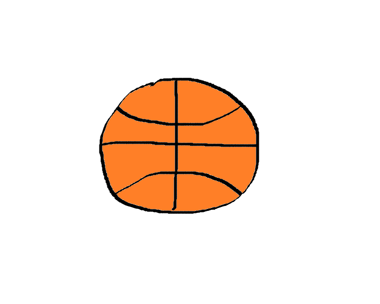
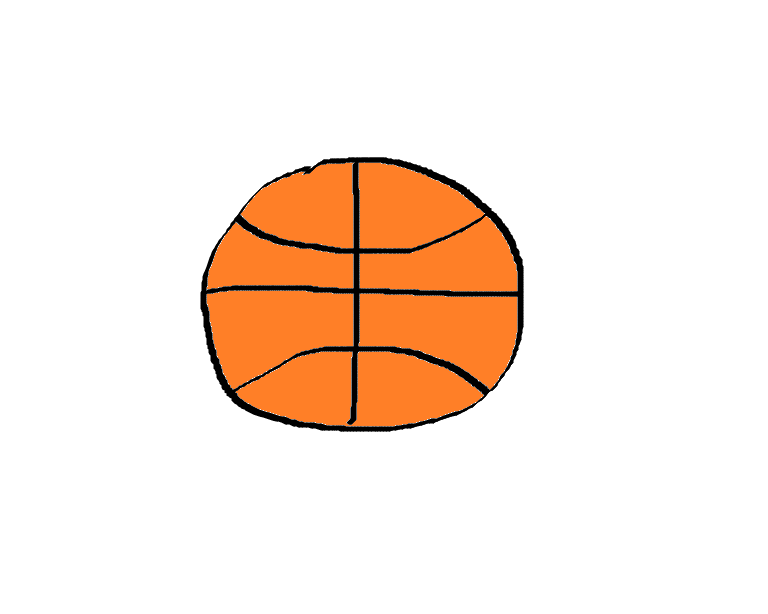

Welcome to the website of the sports news cast that brings you inside footage, statistics, games, and much more to your computer at home. This is the website of the iSports team that tries to bring you coverage of all the national sporting news 24 hours a day. We have designed this website to easily find the latest news on all of your favorite sports teams; whether it be baseball, football, or even basketball. We hope this web page is appealing to you and if not, let us know and we will fix our web page to better your needs as a sports fan.

 

We realize that there is not a variety of sports. If there is a specific sport you would like to see information on, contact us and we will research it and add it to the website.